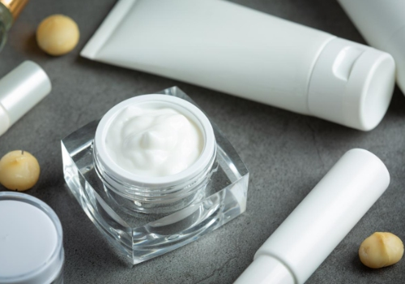

Industry Information
Nov. 20, 2025
Developing a stable cream or lotion begins with understanding how emulsions behave and choosing the right emulsifier for cream. In personal care formulations, an emulsifier is not just an auxiliary ingredient—it determines whether a product stays smooth, uniform, and resistant to separation throughout its shelf life. Formulators often face challenges such as instability under heat, viscosity loss, or phase separation. Selecting the appropriate emulsification system helps prevent these issues and ensures predictable product performance.

This article explains how emulsifiers work, the main categories used in creams and lotions, what factors influence stability, and how to select an emulsifier for cream based on formulation goals.
Creams and lotions are typically oil-in-water (O/W) or water-in-oil (W/O) emulsions. Without a proper emulsifier for cream, the oil and water phases naturally separate because they are chemically incompatible. An emulsifier reduces interfacial tension and forms a protective layer around droplets, keeping the emulsion intact.
A well-selected emulsifier for cream contributes to:
Long-term physical stability
Attractive texture and spreadability
Predictable viscosity
Tolerance to heat and cold storage
Sensory profile that fits the intended application
Because consumers expect a consistent product from the first to the last use, formulators must focus on building a strong emulsification system rather than relying solely on stabilizers or thickeners.
Each emulsifier for cream falls into one of several functional categories. Choosing among them depends on the formulation type, oil phase composition, and the desired sensory effect.
Widely used because of their mildness and broad pH compatibility.
Function | Typical Ingredients | Features |
O/W emulsification | Cetearyl alcohol & Ceteareth-20, Stearic acid + TEA combinations | Stable, versatile, good skin feel |
Cold-process emulsification | Glyceryl stearate SE, Self-emulsifying waxes | Convenient for heat-sensitive actives |
These are the most common choices when selecting an emulsifier for cream for daily skincare products.
Provide strong emulsifying power but may feel less silky.
Examples: sodium stearoyl lactylate, potassium cetyl phosphate
Best used when needing high stability at low cost
Often paired with nonionic emulsifiers for a balanced sensory profile
Used when conditioning benefits are required.
Example: behentrimonium chloride
Often used in hair conditioners rather than creams
Gaining popularity in clean-label formulations.
Examples: lecithin, sucrose esters, polyglyceryl esters
Mild and biodegradable
May require co-emulsifiers to improve viscosity or stability
Selecting a natural emulsifier for cream requires special consideration because these systems can be more sensitive to oil phase variations.
Choosing the right emulsifier for cream requires evaluating multiple variables within the formulation. The emulsifier alone cannot guarantee stability without considering the following factors.
Different oils require different HLB values or combinations of emulsifiers.
Lightweight esters may destabilize a high-fat phase if the emulsifier is not compatible.
Waxy or high-melting components may require co-emulsifiers for structure.
A foundational guideline for formulating creams and lotions.
O/W emulsions typically need an emulsifier with HLB 8–16
W/O emulsions require HLB 3–6
Using an emulsifier with the wrong HLB can reduce viscosity and cause early separation.
Even the best emulsifier for cream can fail if the manufacturing procedure is incorrect.
Heating both phases to proper temperatures ensures uniform mixing
High-shear homogenization reduces droplet size, improving stability
Cooling rate influences viscosity and texture
Some actives may interact with emulsifiers, changing their performance.
Acids or bases can disrupt certain emulsifier systems
Electrolytes may thicken or weaken emulsions
Alcohol can reduce viscosity if not balanced properly
The ideal emulsifier for cream is selected by balancing performance, sensory expectations, and formulation constraints. Below is a framework formulators can use during development.
1. Identify Emulsion Type First
O/W emulsions → lighter lotions, moisturizing creams
W/O emulsions → richer creams, barrier products
Each requires a different emulsifier system.
2. Evaluate Oil Phase Percentage
Higher oil content generally requires a stronger emulsifier or a combination of primary and secondary emulsifiers.
3. Match HLB Requirements
Use the required HLB of the oil phase as a starting point.
Combining emulsifiers is often more effective than using a single one.
4. Consider Sensory Expectations
A silky, lightweight lotion needs a different emulsifier for cream than a rich night cream.
5. Test Thermal and Long-Term Stability
Conduct:
Accelerated stability testing
Freeze–thaw cycles
Centrifuge tests
Even emulsifiers labeled as “self-stabilizing” require verification under real-world conditions.
A primary emulsifier for cream may not always be enough. Co-emulsifiers improve viscosity and strengthen the interfacial film.
Common options include:
Fatty alcohols (cetyl, cetearyl)
Fatty acids (stearic acid)
Waxes (beeswax, synthetic waxes)
Gelling agents (carbomers, cellulose derivatives)
These do not replace an emulsifier, but they help build structure and prevent separation under stress.
Selecting the right emulsifier for cream is essential for creating stable and reliable skincare formulations. By understanding emulsion behavior, evaluating the oil phase, and choosing emulsifier systems that match the desired texture and performance, developers can achieve long-term stability without compromising sensory quality.
As formulations evolve, emulsifier selection becomes even more important for balancing stability, processing efficiency, and regulatory requirements. For teams working on new cream or lotion projects, having access to consistent raw materials and formulation insight can support smoother development. GOLIATH offers a range of cosmetic ingredients used in emulsion systems and can provide technical references when needed, helping formulators make informed decisions during the development process.

Goliath Ingredients Holding Limited
1st Floor, Ellen Skelton Building, 3076 Sir Francis Drake’s Highway, Road Town, Tortola, VG1110, British Virgin Islands.
henry@goliathholding.com
Navigation
Email: henry@goliathholding.com